Разбор рынка: GRAFIT в Екатеринбурге
Снято 08.11.2026 · сервис, ремонт и русификация китайских гибридов и электромобилей · Екатеринбург
Коротко
Данные говорят: рынок не занят целиком, но и не пуст. Открытие оправдано как проверка, а решение надо подтвердить числом машин и ценой заявки, этих цифр пока нет.
- Интерес к машинам большой, запросов на сервис мало. Zeekr – 6 027 в месяц, Voyah – 5 307, Voyah Free – 2 370. При этом «сервис lixiang» – 25, «ремонт zeekr» – 3, «русификация китайских автомобилей» – 75. По пяти маркам GRAFIT всего 152 прямых запросов в месяц на сервис, ремонт и ТО и 90 на русификацию, плюс общие вроде «русификация автомобиля» – 111. Один поиск точку не загрузит.
- Конкуренты сильны по отдельности, но никто не держит всё сразу. На Картах сильны HPS (5,0, 81 оценка) и Тесла Сервис (4,9, 91), а ЭлектроАвто – всего 7 оценок. В выдаче наоборот: ЭлектроАвто 20 попаданий из 48, Chinnamon 13, ProVolta 13, HPS 11. Отдельно сильны Чипкар в русификации (5,0, 205) и Гибрид-Сервис в гибридах (5,0, 301).
- Догонять на картах придётся. Ориентир – 80–100 живых оценок, столько у двух профильных лидеров. Быстро не получится, поэтому начинать надо до открытия точки.
- Цены расходятся до двух раз. Русификация Lixiang от 55 000 до 120 000 ₽, Voyah от 70 000 до 110 000 ₽. Московская цена GRAFIT на Voyah Free (от 18 000 ₽) здесь намного ниже рынка, а полное ТО Lixiang (от 36 000 ₽) выше коридора 15 000–25 000 ₽.
- Реклама в Директе. 16 из 32 объявлений – на запросах про русификацию. По сервису Lixiang, Zeekr, Avatr и Lynk & Co её почти нет.
- С чего начать: сайт под SEO, Яндекс Карты и 2ГИС, сразу Яндекс Бизнес. Потом тест Директа, Авито, VK и договорённости с продавцами машин.
Авито, 2ГИС, посты в VK и число машин в городе снять не удалось, см. «Не проверено».
Таблицы одним файлом: tablitsy.xlsx.
Кого смотрели
- Запросы. 475 фраз спроса и 48 запросов выдачи в регионе Екатеринбург (lr=54). Марки: Lixiang, Zeekr, Voyah, Avatr, Lynk & Co как основные для GRAFIT, плюс Geely, Changan, BYD, Deepal, AITO, Xiaomi, Denza, GAC, Exlantix, Hongqi и другие для понимания, куда расти.
- Откуда конкуренты. 40 компаний из таблиц ваших менеджеров (2ГИС, Авито), всё, что нашлось в выдаче Яндекса и Google, и Яндекс Карты по 8 запросам (70 карточек), плюс карточки ключевых конкурентов.
- Открыто. 69 сайтов прочитаны, 41 пройден браузером со снимками, карты – около 95 карточек.
- Убрали: чип-тюнинг без работы с китайскими электромобилями (21 из вашей базы), запчасти, магазины аккумуляторов, ремонт самокатов и детских электромобилей, СТО общего профиля без упоминания марок. Агрегаторы (Авито, Zoon, Яндекс Услуги) считаем каналом, а не конкурентом.
В карточки ниже вошли те, кто реально забирает клиента GRAFIT в этом городе. Полный список – в файле таблиц.
Рынок
Спрос по маркам
Wordstat, город Екатеринбург, снято 08.11.2026, запросов в месяц, широкое соответствие. Прочерк – Wordstat не вернул число. Написание кириллицей смотрите отдельно: «воя» и «бид» шумят посторонними смыслами.
| Марка | Всего | Сервис | Ремонт | ТО | Русификация | Запчасти | Прошивка | Мастер-аккаунт | Диагностика |
|---|---|---|---|---|---|---|---|---|---|
| Lixiang | 1 855 | 25 | 7 | 14 | 13 | – | 1 | 3 | 1 |
| Лисян | 2 930 | 21 | 2 | 3 | 2 | 5 | 19 | 4 | 1 |
| Zeekr | 6 027 | 16 | 3 | 3 | 35 | 24 | – | 17 | 1 |
| Зикр | 4 843 | 2 | 8 | – | 17 | 4 | 3 | 1 | – |
| Voyah | 5 307 | 10 | 6 | 26 | 12 | 3 | 7 | 9 | 2 |
| Avatr | 835 | 3 | – | – | 1 | – | – | – | – |
| Lynk & Co | 1 182 | – | – | 3 | 10 | 1 | – | 4 | – |
| Geely* | 22 343 | 26 | 42 | 127 | 43 | 66 | 75 | 17 | 7 |
| Changan* | 11 138 | 2 | 21 | 78 | 40 | 10 | 19 | 12 | – |
| Чанган* | 21 599 | 34 | 23 | 209 | 34 | 18 | 72 | 4 | 3 |
| BYD | 4 999 | – | 7 | – | 13 | 10 | 5 | 2 | 4 |
| Deepal | 1 756 | 3 | – | – | – | – | 1 | – | – |
| AITO | 907 | 3 | – | – | 10 | 1 | – | – | – |
| GAC* | 7 916 | 16 | 8 | 30 | 55 | 10 | 14 | 2 | – |
| Exlantix | 2 027 | – | – | 1 | – | 3 | – | – | – |
| Hongqi | 3 016 | 10 | – | 1 | – | 4 | – | – | – |
| Denza | 385 | – | – | – | – | – | – | – | – |
Как читать. Geely и Changan завышены бензиновыми машинами: Monjaro, Atlas, CS55. Для GRAFIT важны их гибриды и электро, см. модели ниже. GAC показывает и другие значения этого слова.
Спрос по моделям
Те же условия. В столбце «Интерес» жирным – от 1 000 в месяц; жирные названия – марки GRAFIT.
| Модель | Интерес | ТО | Ремонт | Русификация |
|---|---|---|---|---|
| lixiang l9 | 363 | – | – | 1 |
| lixiang l7 | 462 | – | – | – |
| lixiang l6 | 153 | – | – | – |
| lixiang l8 | 60 | – | – | – |
| lixiang mega | 3 | – | – | – |
| zeekr 8x | 1 666 | – | – | 19 |
| zeekr 9x | 864 | – | – | 9 |
| zeekr 001 | 810 | 2 | – | 1 |
| zeekr x | 274 | – | – | – |
| zeekr 007 | 194 | – | – | – |
| zeekr 7x | 188 | – | – | 1 |
| zeekr 009 | 139 | – | – | – |
| voyah free | 2 370 | 16 | 3 | 4 |
| voyah dream | 289 | – | – | – |
| voyah passion | 251 | 9 | – | – |
| voyah courage | 28 | – | – | – |
| avatr 11 | 202 | – | – | 1 |
| avatr 12 | 120 | – | – | – |
| avatr 07 | 47 | – | – | – |
| lynk co 900 | 374 | 3 | – | 8 |
| lynk co 06 | 89 | – | – | – |
| lynk co 09 | 87 | – | – | 2 |
| lynk co 08 | 52 | – | – | – |
| geely ex5 | 2 095 | 11 | – | – |
| geely starship 7 | 325 | – | – | – |
| geely galaxy m7 | 316 | – | – | 7 |
| changan q05 | 1 091 | – | – | 10 |
| changan a06 | 1 070 | 1 | – | 15 |
| changan uni k | 498 | 9 | – | – |
| deepal g318 | 684 | – | – | – |
| deepal s07 | 286 | – | – | – |
| byd seagull | 324 | – | – | 2 |
| byd yuan up | 312 | – | – | 3 |
| byd song plus | 259 | – | – | – |
| aito m5 | 210 | – | – | – |
| aito m7 | 179 | – | – | – |
| aito m9 | 166 | – | – | 10 |
| exlantix et | 911 | 1 | – | – |
| gac s7 | 749 | – | 1 | 10 |
| xiaomi yu7 | 253 | – | – | 2 |
Что растёт. Geely EX5 вырос с 361 (ноябрь 2025) до 2 314 (сентябрь 2026). Zeekr – с 4 105 до 6 306, Voyah – с 4 589 до 6 105, рост с июля. Lixiang снизился: с 2 148 до 1 856.
Новые машины ищут русификацию. Zeekr 8X – 19 в месяц, Changan A06 – 15, Changan Q05, GAC S7 и AITO M9 – по 10, Zeekr 9X – 9, Lynk & Co 900 – 8. гипотеза: это свежий привоз, и русификация становится первым заходом в сервис; проверяется вопросом клиентам.
Спрос по услугам
| Группа | Запрос | В месяц | Частые уточнения |
|---|---|---|---|
| Русификация | русификация автомобиля | 111 | русификация китайских автомобилей 75; русификация китайских автомобилей в екатеринбурге 59 |
| Русификация | русификация китайских автомобилей | 75 | русификация китайских автомобилей в екатеринбурге 59; птс русификация китайских автомобилей в екатеринбурге 8 |
| Русификация | русификация авто из китая | 34 | русификация авто из китая екатеринбург 14; сколько стоит русификация авто из китая 12 |
| Русификация и ПО | мастер аккаунт | 205 | мастер аккаунт geely 17; мастер аккаунт zeekr 17 |
| Сервис китайских | ремонт китайских автомобилей | 36 | ремонт китайских автомобилей в екатеринбурге 14; ремонт и диагностика китайских автомобилей 3 |
| Сервис китайских | автосервис китайских автомобилей | 20 | автосервис китайских автомобилей екатеринбург 10; автосервис по ремонту китайских автомобилей 3 |
| Сервис китайских | сервис китайских автомобилей | 17 | сервис китайских автомобилей екатеринбург 6; установка одис сервис с китайскими автомобилями 5 |
| Сервис китайских | то китайских автомобилей | 5 | стоимость то на китайские автомобили 1 |
| Электро | ремонт электромобилей | 110 | ремонт детских электромобилей 46; ремонт электромобилей в екатеринбурге 19 |
| Электро | обслуживание электромобилей | 49 | обслуживание электромобилей екатеринбург 20; стоимость обслуживания электромобиля 3 |
| Электро | то электромобиля | 14 | |
| Электро | сервис электромобилей | 12 | |
| Электро | диагностика электромобиля | 8 | диагностика батареи электромобиля 5 |
| Электро | ремонт батареи электромобиля | 6 | ремонт батареи китайского электромобиля 1 |
| Зарядка | установка зарядной станции для электромобиля | 40 | установка зарядных станций для электромобилей екатеринбург 13; установка зарядных станций для электромобилей в москве 2 |
| Зарядка | зарядка для электромобиля | 495 | станция для зарядки электромобилей 66; зарядки для электромобилей в екатеринбурге 55 |
| Гибриды | ремонт гибридов | 31 | ремонт гибридов в екатеринбурге 4 |
| Гибриды | ремонт гибридных автомобилей | 21 | ремонт батареи гибридных автомобилей 7; ремонт высоковольтных батарей для гибридных автомобилей 5 |
| Гибриды | диагностика гибрида | 12 | |
| Подвеска | ремонт пневмоподвески | 114 | ремонт пневмоподвески екатеринбург 48; ремонт пневмоподвески мерседес 9 |
| Детейлинг | шумоизоляция автомобиля | 614 | шумоизоляция автомобиля в екатеринбурге 114; шумоизоляция автомобиля купить 92 |
| Детейлинг | антикор автомобиля | 416 | обработка антикором автомобиля 181; антикор екатеринбург обработка автомобиля 149 |
| Детейлинг | оклейка автомобиля пленкой | 258 | оклейка пленкой автомобиля екатеринбург 134; оклейка автомобиля антигравийной пленкой 26 |
| Детейлинг | керамика автомобиля | 47 | керамика для кузова автомобиля 25; покрыть автомобиль керамикой 14 |
Вывод. Самые большие цифры не про сервис: шумоизоляция – 614, антикор – 416, плёнка – 258. Но это спрос по всем машинам, и конкуренцию там я не снимал. Запрос «ремонт электромобилей» – 110, но 46 из них про детские. «Мастер-аккаунт» – 205.
Кто стоит в выдаче Яндекса
48 запросов, Екатеринбург, снято 08.11.2026. Сколько раз сайт попал в выдачу и лучшая позиция. Таблица – сервисы и русификаторы от 4 попаданий; без агрегаторов, запчастей (Авточина ooo-ks.ru – 11) и продавцов машин (Автомир – 7, li-motors – 5).
| Сайт | Попаданий | Лучшая позиция | Движок | Страниц в sitemap |
|---|---|---|---|---|
| electroavto.com | 20 | 1 | Next/React | 27 |
| chinnamon.ru | 13 | 5 | Astro | 1515 |
| ekb.navimotors.ru | 13 | 1 | WordPress | – |
| екатеринбург.русификацияавто.рф | 13 | 2 | WordPress | 58 |
| axto.ru | 12 | 2 | ? | 290 |
| atfexpert-ekb.ru | 12 | 1 | WordPress | 2817 |
| bromise.ru | 11 | 1 | Next/React | 726 |
| hpservice.pro | 11 | 1 | ? | – |
| ekb.fastmb.ru | 10 | 2 | ? | 258 |
| autoadapt.ru | 9 | 1 | WordPress | 8475 |
| avtoban-service.ru | 9 | 1 | ? | 30000 |
| kitaiskimaster96.ru | 8 | 6 | ? | – |
| ekb.rusifix.ru | 8 | 4 | ? | – |
| electro.avtoban-service.ru | 7 | 5 | Тильда | 4 |
| russification.ru | 7 | 5 | ? | 233 |
| premium-al.ru | 6 | 3 | Тильда | 4 |
| teslase.ru | 6 | 1 | Next/React | 1 |
| autohype96.ru | 6 | 3 | WordPress | 988 |
| avtoban-zeekr.ru | 6 | 1 | Тильда | 18 |
| автобан.рф | 5 | 5 | ? | – |
| new.teslase.ru | 5 | 5 | ? | – |
| hybridservis.ru | 4 | 1 | Joomla | 2312 |
Площадки в той же выдаче: 2gis.ru – 36, avito.ru – 34, yandex.ru (Карты) – 25, zoon.ru – 16, uslugi.yandex.ru – 10. Карты и Авито стоят рядом с сайтами, поэтому карточка и объявления важны не меньше сайта.
Сайты GRAFIT пока почти нет: 2 попадания, лучшая позиция 9. Это общие страницы сайта без привязки к городу: статья про мастер-аккаунт и русификация Avatr 11. Яндекс уже показывает домен в городе, это хороший задел для поддомена.
Цены
Цены с сайтов и карточек Яндекс Карт, снято 08.11.2026. Так, как написано у компании: «от» и точная цена – разное. Это публичный прайс, а не ответ менеджера: реальная цена может отличаться. Полная таблица с источниками – в файле.
Русификация
| Что | Автолидер (premium-al) | ProVolta Екб | EVpapa (Пермь, Екб, Ижевск) | ЭлектроАвто | АКСТО (федер.) | GRAFIT Москва |
|---|---|---|---|---|---|---|
| Lixiang | 120 000 | от 55 000; комплекс 110 000 (Ultra 135 000) | снятие ограничений 27 500–38 500 | 5 000 (мультимедиа) | 35 000–90 000 | от 55 000 |
| Zeekr 001 | планшет от 72 000 | от 15 000 | 45 000 | 5 000 (мультимедиа) | 40 000–250 000 | от 45 000 |
| Voyah | 110 000 | 70 000 | нет цены | 5 000 (мультимедиа) | 50 000–150 000 | Free от 18 000 |
| Geely | Monjaro 60 000 | нет цены | Monjaro 2026 под ключ 50 000 | нет цены | 30 000–100 000 | в прайсе нет |
| Мастер-аккаунт | Zeekr 001: 95 000 | Zeekr: 85 000 | не нашёл | нет цены | восстановление: на разных страницах от 20 000 и от 60 000 | Zeekr: от 60 000 |
| Слот SIM | нет цены | 20 000–50 000 | активация 20 000 | нет цены | пайка от 80 000 | от 15 000 до от 30 000 |
Федеральные ориентиры без точки в городе: bromise – Zeekr 8X и 9X 130 000 / 250 000 / 320 000 ₽; russification.ru – Zeekr 8X от 350 000 ₽, Lynk & Co 900 от 120 000 ₽. Местные: Чипкар – «китайские авто (Geely, Changan и др.)» 10 000 ₽; ФастМобил – новые авто от 15 000 ₽.
Сервис
| Что | Автобан Электро | HPS | ЭлектроАвто | Гибрид-Сервис | Китайский мастер | GRAFIT Москва |
|---|---|---|---|---|---|---|
| Диагностика | 15 000 | от 5 000 | 9 000 | 2 400 | от 1 400 | Zeekr ZDS от 10 000 |
| Плановое ТО | от 15 000 (Lixiang, Zeekr) | от 18 000 | 25 000 | 1 800 | нет цены | полное: Zeekr от 22 000, Lixiang от 36 000 |
| Батарея HV | нет цены | нет цены | 50 000 | нет цены | нет цены | нет цены |
| Осмотр ходовой | нет цены | от 2 300 | нет цены | нет цены | от 600 | бесплатно, 39 параметров |
Что видно.
- Коридор ТО у профильных сервисов – 15 000–25 000 ₽, у GRAFIT полное ТО Lixiang от 36 000 ₽ выше него (состав работ надо сравнить). Цены вроде «Voyah ТО от 1 004 ₽» у сети *-remont – это заманка за минимальную работу, а не ТО.
- Бесплатный осмотр не уникален: бесплатную диагностику обещают сеть *-remont и АВС Сервис, Автобан Электро дарит диагностику ходовой при ТО, Кардан – осмотр при ремонте. У HPS осмотр от 2 300 ₽. Для GRAFIT это полезная мелочь, а не отличие.
- Подробнее всего цены на русификацию открыты у ProVolta и Автолидера. У ЭлектроАвто на сайте цен нет, только на Картах.
- GRAFIT в Москве по Lixiang на нижней границе, по Voyah Free сильно ниже города. Цену по Екатеринбургу надо решить отдельно: снизу стоят Чипкар и ФастМобил, сверху Автолидер.
Каналы
Реклама в Директе
48 запросов, снято 08.11.2026. В 20 запросах реклама есть, всего 32 объявления; один запрос вернул ошибку.
| Рекламодатель | Объявлений | По каким запросам | Что обещает |
|---|---|---|---|
| kibercar.com | 7 | русификация, Lixiang, Zeekr, Avatr | «Комплексная русификация», гарантия, консультация |
| aac-dt.ru (АвтоАудиоЦентр) | 6 | русификация, Lixiang, Zeekr, Voyah | Русификация, интернет, приложения |
| obnoviauto.ru | 2 | русификация, Lixiang | Цена по марке и году |
| autoservice-km.ru (Крутящий Момент) | 4 | сервис Geely, Changan | Адрес и телефон сервиса |
| hpservice.pro | 1 | русификация Voyah | Сервис VOYAH, Li Auto, ZEEKR |
| Дилеры (Оками, Asmoto) | 5 | сервис и ремонт Voyah, Geely, русификация Voyah | Официальный дилер |
Вывод. По «сервис/ремонт» Lixiang, Zeekr, Avatr и Lynk & Co рекламы почти нет. На 10 запросов по этим маркам одно объявление, и оно из Петербурга (zeekrspb). Цену клика не снимал: это покажет только тест в кабинете.
Яндекс Карты
Снято 08.11.2026. Прямые конкуренты слабы именно здесь.
| Компания | Оценка | Оценок | Отзывов | Что там |
|---|---|---|---|---|
| Крутящий Момент | 4,9 | 1 152 | 508 | общий сервис, рекламируется по Geely и Changan |
| Автобан (основной сервис) | 4,7 | 825 | 293 | мультибренд, 45 позиций прайса |
| Скандинавия | 4,5 | 302 | 125 | общий сервис |
| Гибрид-Сервис | 5,0 | 301 | 140 | гибриды, «Хорошее место 2026» |
| АвтоПилот, ул. Лыжников, 42 (адрес сети *-remont) | 4,6 | 244 | 129 | общий сервис |
| Чипкар | 5,0 | 205 | 166 | русификация, чип-тюнинг, 22 позиции прайса, «Хорошее место 2026» |
| Автобан, ул. Металлургов, 67 | 4,4 | 101 | 43 | рубрика «автосалон» |
| Тесла Сервис | 4,9 | 91 | 29 | профильный |
| Voyah Автолидер | 4,7 | 86 | 33 | дилер |
| HPS | 5,0 | 81 | 33 | самый близкий по маркам |
| Китайский мастер | 4,8 | 17 | 15 | 65 позиций прайса, бензиновые китайцы |
| ЭлектроАвто | 4,4 | 7 | 6 | профильный, 4 услуги с ценами |
| Avtoban Lynk & Co, Zeekr; Автолидер Electro; АВС Сервис | нет оценок | 0 | 0–1 | карточки есть, оценок нет |
Вывод. Профильные лидеры набрали 80–90 оценок, общие сервисы – сотни и тысячи. GRAFIT начинает с нуля: отзывы других городов на новую карточку не переносятся. Сильные карточки заполнены: прайс, фото, награды; прямая страница цен Чипкара есть в выдаче. Карточки Chinnamon, ProVolta и ФастМобил найти не удалось, 2ГИС не снят.
Соцсети
VK, снято 08.11.2026, подписчики: АвтоХайп 6 500, ОКАМИ (дилер) 4 000, АвтоАудиоЦентр 3 800, Автогост 2 400, Автобан 1 400, Авант 1 000, Авточина 622, ПроАвто 606, Airmatik 229, Скандинавия 115. Группа vk.com/grafit_service – 1 100, она про Москву и Краснодар; с сайта GRAFIT ссылка на неё не нашлась, проверьте, ваша ли. У ЭлектроАвто, HPS, Автобан Электро на сайте VK нет вовсе, только Telegram и MAX.
Просмотры и частоту постов не снимал, контент конкурентов надо смотреть руками.
Сводная таблица
| Компания | Выдача (из 48) | Карты: оценка / оценок | Цены | Марки | Русификация | Реклама | Страниц |
|---|---|---|---|---|---|---|---|
| ЭлектроАвто | 20, лучшая 1 | 4,4 / 7 | на Картах | 11 страниц марок, без Lynk & Co | да | нет | 27 |
| Тесла Сервис (3 адреса сайта) | 14, лучшая 1 | 4,9 / 91 | нет | Tesla, Li, Zeekr, Lynk, Geely | да | нет | лендинги |
| Автобан Электро + Zeekr | 13, лучшая 1 | 4,4 / 101 (автосалон) | ТО и диагностика | Lixiang, Zeekr | да, Zeekr | нет | 4 + 18 |
| Chinnamon (сеть, есть филиал) | 13, лучшая 5 | не найдено | на сайте цен нет | все китайские | не видно | нет | 1 515 |
| ProVolta Екб | 13, лучшая 2 | не найдено | подробно по моделям | 7 | да | нет | 58 |
| Скандинавия | 12, лучшая 1 | 4,5 / 302 | прайс | 7, с Toyota | нет | нет | 2 817 |
| HPS Service | 11, лучшая 1 | 5,0 / 81 | несколько цен | Voyah, Li, Zeekr | по ПО | да, 1 | одна страница |
| ФастМобил | 10, лучшая 2 | не найдено | от 2 500 | 9 | да | нет | 258 |
| Китайский мастер | 8, лучшая 6 | 4,8 / 17 | большой прайс | Geely, Changan | нет | нет | нет sitemap |
| Сеть *-remont.ru | 7, лучшая 2 | адрес: 4,6 / 244 | «от» минимальные | по сайту на марку | нет | нет | 360+ на сайт |
| Автолидер (premium-al) | 6, лучшая 3 | Electro без оценок, дилер 4,7 / 86 | подробно, русификация | 5 | да | нет | лендинг |
| Гибрид-Сервис | 4, лучшая 1 | 5,0 / 301 | на Картах | гибриды | на Картах | нет | 2 312, форум |
| Чипкар | 3, лучшая 8 | 5,0 / 205 | на Картах | все | да | нет | 125 |
| GRAFIT (сейчас) | 2, лучшая 9 | нет точки | Москва | 5 | да | нет | 64 |
Конкурент: ЭлектроАвто
electroavto.com, ул. Рубежная, 6. Вт–Сб 10–19.


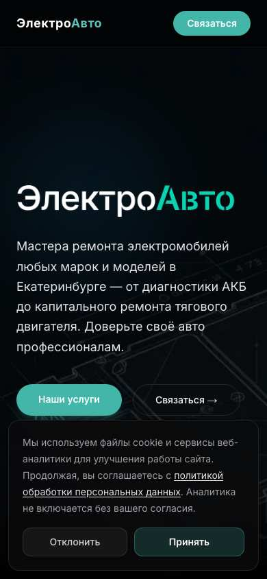
Сайт
Next.js, 27 страниц: 11 страниц марок (Lynk & Co нет), 6 услуг, блог. Оффер «ремонт электромобилей любых марок». Разметка FAQ, Offer, адрес. Цен, кейсов и гарантии на сайте нет.
Заявка
Кнопка «Связаться», Telegram, MAX. Без квиза и калькулятора.
Поиск
20 попаданий из 48, лучшая позиция 1 – главный конкурент в выдаче.
Карты и отзывы
4,4, 7 оценок, 6 отзывов. На Картах 4 услуги с ценами. Отзыв про Lixiang: другие сервисы отказывали, здесь взяли.
Реклама
По 48 запросам не найдена.
Соцсети и контент
Telegram, MAX. VK на сайте нет.
Плюс: понятная структура марка и услуга. Минус: мало оценок и нет цен на сайте. Берём: структуру «ремонт по маркам» и разметку.
Конкурент: Автобан Премиум Электро и Автобан Zeekr
electro.avtoban-service.ru, avtoban-zeekr.ru, ул. Металлургов, 67. Большая группа, официальный Zeekr и Lynk & Co.


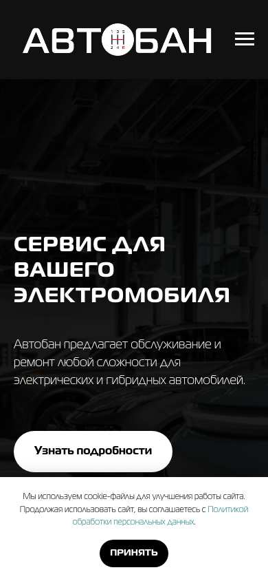
Сайт
Отдельный лендинг на Тильде под Lixiang и Zeekr, 4 страницы, и продающий сайт Zeekr на 18 страниц. Цены: ТО от 15 000 ₽, диагностика 15 000 ₽.
Заявка
Форма, Telegram, MAX; колл-трекинг стоит.
Поиск
Вместе 13 попаданий, лучшая позиция 1 (сайт Zeekr).
Карты и отзывы
Основной Автобан: 4,7, 825 оценок. Металлургов, 67: 4,4, 101 оценка, рубрика «автосалон». Отдельная карточка Lynk & Co и Zeekr без оценок.
Реклама
По 48 запросам объявлений нет. На сайте стоит колл-трекинг. гипотеза: реклама идёт по другим запросам, проверяется только в кабинете.
Соцсети и контент
VK группы компаний 1 400 подписчиков.
Плюс: статус официального сервиса и большая группа компаний. Минус: только две марки на лендинге, нет Voyah. Берём: короткую цену в первом экране.
Конкурент: HPS Service
hpservice.pro, Корейский пер., 10. Специализация Voyah, Li Auto, Zeekr – самый близкий и, по данным, самый сильный прямой конкурент.

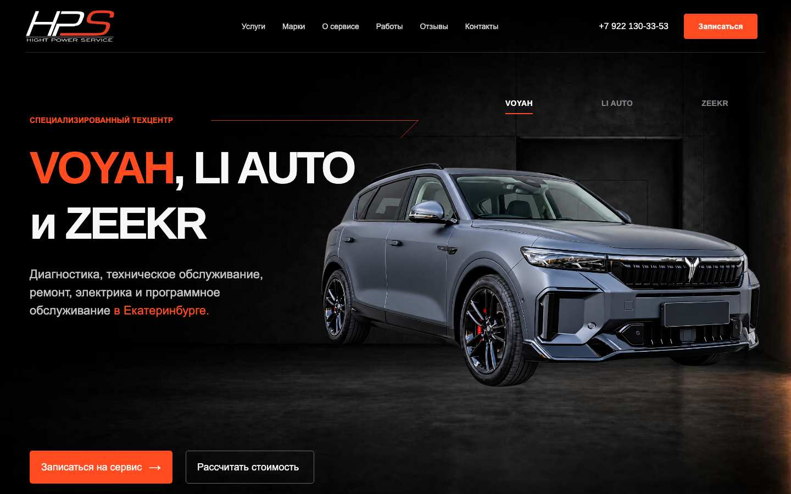

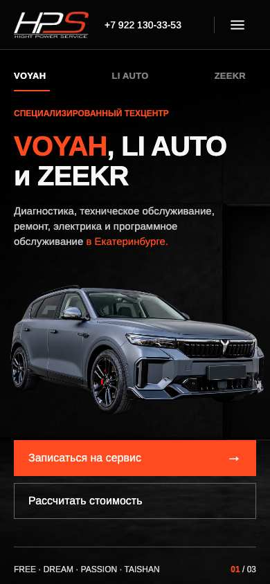
Сайт
Одна страница. «Официальное диагностическое ПО», гарантия, запчасти. Цены: диагностика от 5 000 ₽, ТО от 18 000 ₽, осмотр от 2 300 ₽.
Заявка
Запись и «Рассчитать стоимость», Telegram, MAX.
Поиск
11 попаданий, лучшая позиция 1 при одной странице.
Карты и отзывы
5,0, 81 оценка, 33 отзыва. На сайте есть блок отзывов со ссылками на Яндекс и 2ГИС. На Картах ремонт гибридов 10 000 ₽, ТО 2 370 ₽.
Реклама
1 объявление, «русификация voyah».
Соцсети и контент
Telegram, MAX, VK на сайте нет.
Плюс: точный оффер на три марки, сильная карточка и выдача сразу. Минус: одна страница, Avatr и Lynk & Co нет. Берём: перечень работ от ТО до высоковольтных систем.
Конкурент: Автолидер (premium-al)
premium-al.ru, ул. Шефская, 2Г-2, и пр. Космонавтов, 8. Группа Автолидер, дилер Voyah.

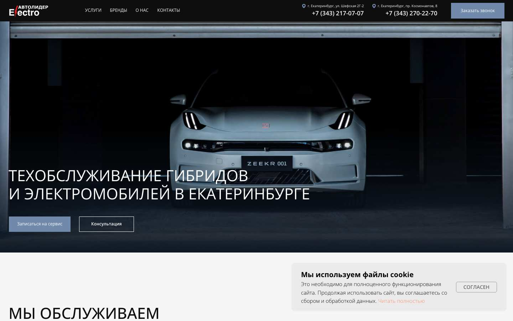

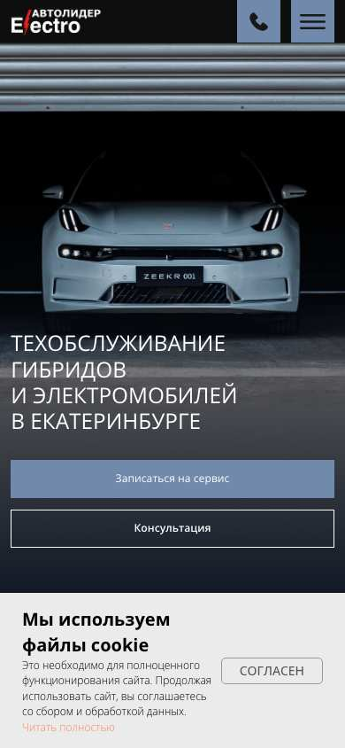
Сайт
Лендинг на Тильде. Цены русификации открыты, это редкость: Lixiang 120 000 ₽, Voyah 110 000 ₽, Monjaro 60 000 ₽.
Заявка
Запись, консультация, Telegram, WhatsApp, колл-трекинг.
Поиск
6 попаданий, лучшая позиция 3.
Карты и отзывы
Voyah Автолидер 4,7, 86 оценок, 33 отзыва, это дилер. Автолидер Electro на том же адресе без оценок.
Реклама
По 48 запросам не найдена.
Соцсети и контент
не проверено: ссылок на группы в шапке сайта нет.
Плюс: два адреса и цены. Минус: одна из самых высоких цен, по сути одна страница. Берём: таблицу цен по маркам на главной.
Конкурент: Тесла Сервис
teslase.ru, new.teslase.ru и zeeker-ekb.ru (один адрес и телефон, тексты отличаются), ул. Кольцевая, 39А.

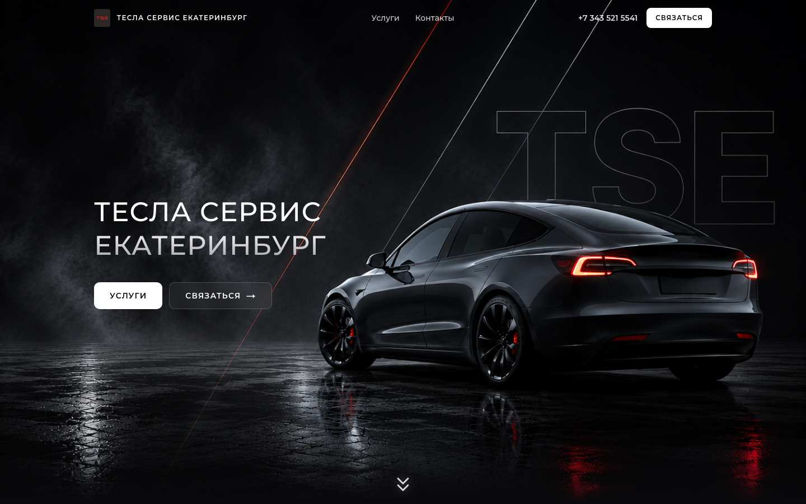

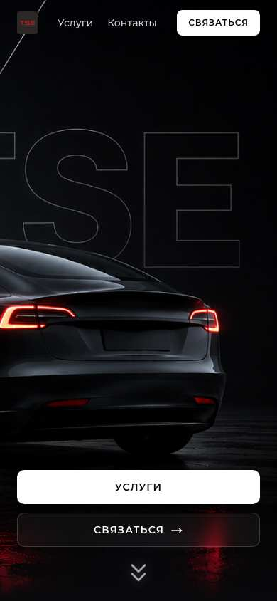
Сайт
Next.js, лендинги. Услуги по маркам: Tesla, Li Auto, Zeekr, Lynk & Co, Geely. Батарея, моторы, инверторы, на zeeker-ekb.ru установка русификации. Цен на сайте нет.
Заявка
Кнопка «Связаться», Telegram.
Поиск
Вместе 14 попаданий, лучшая позиция 1.
Карты и отзывы
4,9, 91 оценка, 29 отзывов. На Картах открытие диагностики Factory Mode 5 000–10 000 ₽.
Реклама
По 48 запросам не найдена.
Соцсети и контент
Telegram.
Плюс: глубокая техника батарей. Минус: адреса дублируются, цен нет. Берём: подробное описание работ с батареей, если это умеет мастер GRAFIT.
Конкурент: Chinnamon
chinnamon.ru. Сеть сервисов китайских авто и электромобилей: Москва, Петербург, Екатеринбург, Тюмень. Адрес филиала я не проверял: сайт показывает его после выбора города.

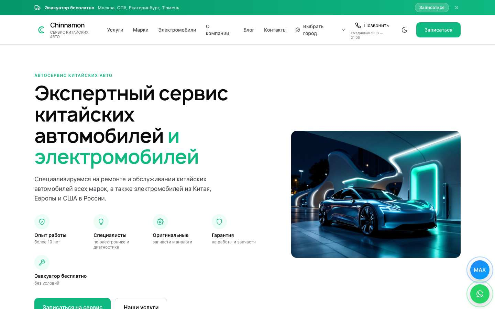

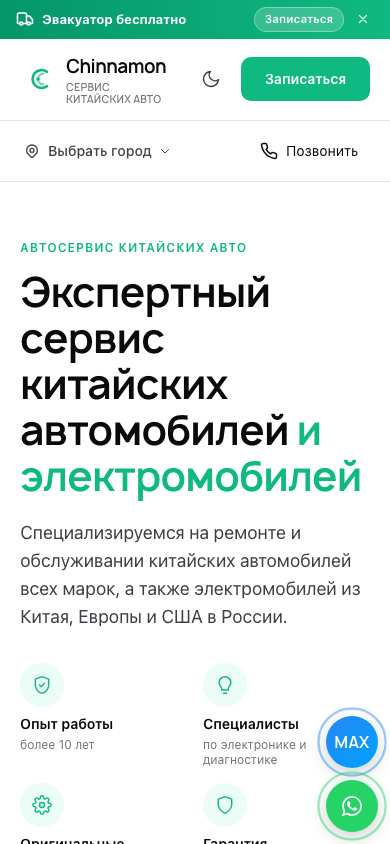
Сайт
Astro, 1 515 страниц: 1 187 страниц «работа × модель», 104 работы, 30 марок. Цен на просмотренных страницах нет. Бесплатный эвакуатор в шапке.
Заявка
Запись, звонок, MAX, Telegram, WhatsApp.
Поиск
13 попаданий, лучшая позиция 5.
Карты и отзывы
не проверено: по названию карточку найти не удалось.
Реклама
По 48 запросам не найдена.
Соцсети и контент
Блог, мессенджеры; VK на сайте нет.
Плюс: самая большая матрица страниц, специализация. Минус: много страниц одного шаблона. Берём: бесплатный эвакуатор как предложение, если партнёр его потянет.
Конкурент: Китайский мастер
kitaiskimaster96.ru, ул. Академика Вонсовского, 1АШ. В основном Geely, Changan и другие бензиновые.


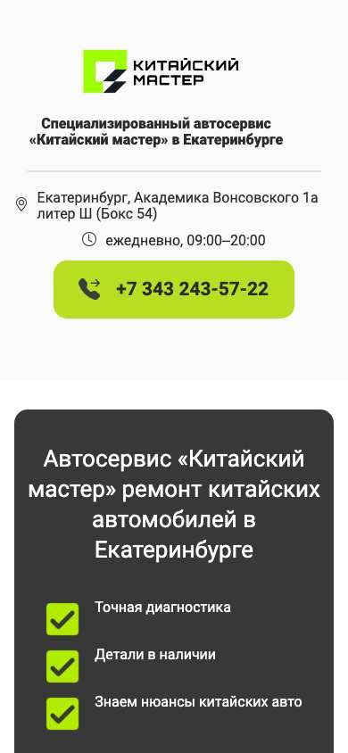
Сайт
Страницы марок, большой прайс: диагностика от 1 400 ₽, масло от 955 ₽, колодки от 1 400 ₽.
Заявка
Форма и телефон, ссылка на 2ГИС.
Поиск
8 попаданий, лучшая позиция 6.
Карты и отзывы
4,8, 17 оценок, 15 отзывов, 65 позиций прайса.
Реклама
По 48 запросам не найдена.
Соцсети и контент
Ссылок на группы нет.
Плюс: цены по всем работам. Минус: слова «электромобиль» и «гибрид» на главной нет. Берём: подход «вся стоимость на сайте».
Конкурент: Скандинавия
atfexpert-ekb.ru, ул. Артинская, 17Е. Общий сервис с большим сайтом.


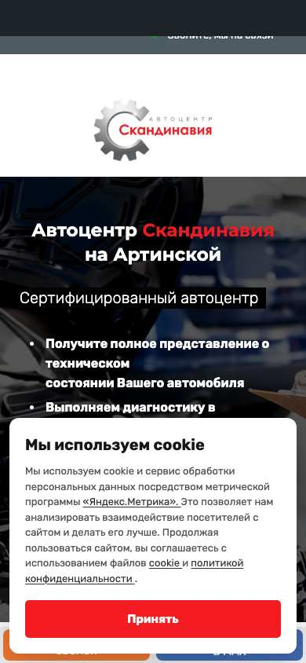
Сайт
WordPress, 2 817 страниц по маркам и работам, прайс. Lixiang, Zeekr, Voyah, Geely упоминаются на главной среди Toyota и других марок.
Заявка
Телефон, WhatsApp, MAX, VK.
Поиск
12 попаданий, лучшая позиция 1: занимает выдачу объёмом страниц.
Карты и отзывы
4,5, 302 оценки, 125 отзывов, 9 позиций прайса.
Реклама
По 48 запросам не найдена.
Соцсети и контент
VK 115 подписчиков.
Плюс: сайт большой и старый. Минус: не специалист по китайским, это видно по странице. Берём: страницы услуг под запросы в Екатеринбурге, но со своей пользой.
Конкурент: Гибрид-Сервис
hybridservis.ru, ул. 8 Марта, 267Г. Гибриды, в основном японские.

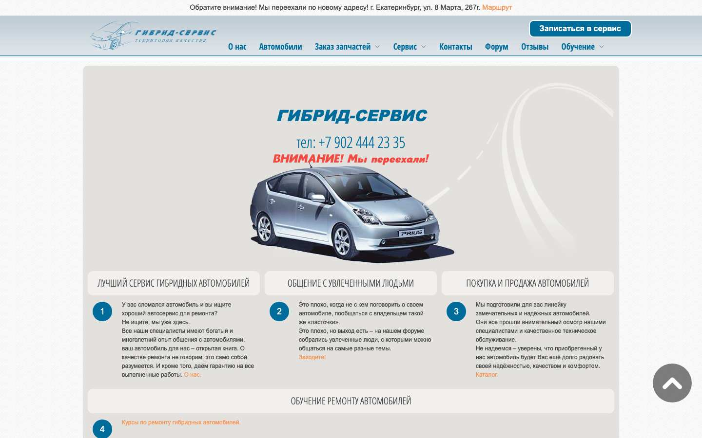

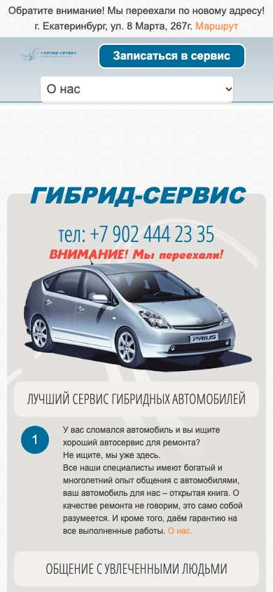
Сайт
Joomla, 2 312 страниц, из них форум. Цены на сайте почти не показаны.
Заявка
Телефон, контакты.
Поиск
4 попадания, №1 по «ремонт гибридов».
Карты и отзывы
5,0, 301 оценка, 140 отзывов, «Хорошее место 2026». Диагностика 2 400 ₽, ТО 1 800 ₽ на Картах.
Реклама
По 48 запросам не найдена.
Соцсети и контент
YouTube по ссылке с сайта.
Плюс: репутация и форум, давно на рынке. Минус: на сайте нет упора на новые китайские машины. Берём: карточку на Картах как эталон.
Конкурент: Чипкар
chipcar66.ru, ул. Серова, 16А, и Челябинск. Русификация, чип-тюнинг, ключи.


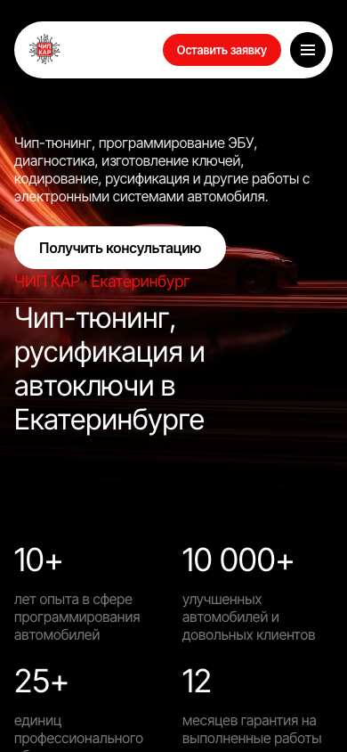
Сайт
125 страниц, разметка AutoRepair, гарантия, кейсы.
Заявка
Форма, Telegram, MAX, Авито.
Поиск
3 попадания, лучшая позиция 8.
Карты и отзывы
5,0, 205 оценок, 166 отзывов. Русификация китайских авто от 10 000 ₽ на Картах. Прямая страница цен попала в выдачу.
Реклама
По 48 запросам не найдена.
Соцсети и контент
Авито и Telegram на сайте.
Плюс: лидер карт в русификации, сильный прайс. Минус: чип-тюнинг и русификация, а не сервис китайских машин. Берём: прайс на Картах, из-за которого карточка выходит в выдаче. Главный конкурент на русификацию.
Конкурент: ProVolta Екатеринбург
екатеринбург.русификацияавто.рф, ул. Большевистская, 111А. Сеть русификации. В таблице менеджеров GRAFIT отмечена отдельно, возможно, партнёр: уточните.

Сайт
WordPress, 58 страниц, 26 страниц марок с ценами по моделям: самая подробная цена в городе.
Заявка
Телефон, форма, выезд мастера 5 000 ₽.
Поиск
13 попаданий, лучшая позиция 2.
Карты и отзывы
не проверено: карточку не удалось найти по названию.
Реклама
По 48 запросам в Екатеринбурге не найдена.
Соцсети и контент
На основном сайте Telegram, VK, YouTube.
Плюс: цена по каждой модели и работе. Минус: на сайте работы только по ПО, сервиса нет. Берём: прайс по моделям.
Конкурент: ФастМобил и NAVIМоторс
ekb.fastmb.ru (ул. Шейнкмана, 114А) и ekb.navimotors.ru. Русификаторы, у которых город вынесен на поддомен. Есть ли у NAVIМоторс точка в городе, не проверял.


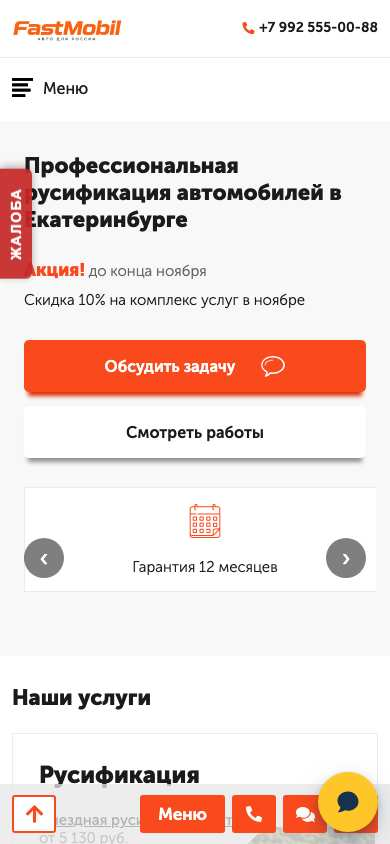
Сайт
ФастМобил: 258 страниц, цены от 2 500 ₽, в тексте «от 537 руб.». NAVIМоторс: большой текст, марок 13, цены не открыты.
Заявка
WhatsApp, Telegram, форма.
Поиск
10 и 13 попаданий, лучшая позиция 1–2.
Карты и отзывы
не проверено: карточки не удалось найти по названию.
Реклама
По 48 запросам не найдена.
Соцсети и контент
ФастМобил: VK, YouTube и Instagram в ссылках.
Плюс: широкий охват запросов поддоменом. Минус: низкая цена «от» без объяснения. Берём: поддомен города, как и задумано у GRAFIT.
Конкурент: Сеть lixiang-remont, zeekr-remont, voyah-remont
ekaterinburg.lixiang-remont.ru и соседи. На всех один телефон и адрес: ул. Лыжников, 42; там на Картах АвтоПилот. Связь сайтов с ним не подтверждена.


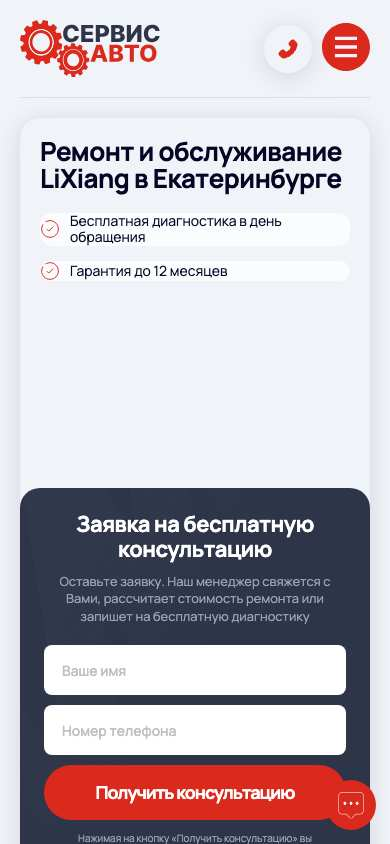
Сайт
Сайт на марку, по 360+ страниц одного шаблона. Цены «от»: диагностика от 603 ₽, ТО Voyah от 1 004 ₽, замена масла от 402 ₽.
Заявка
Квиз, форма.
Поиск
7 попаданий вместе, лучшая позиция 2.
Карты и отзывы
АвтоПилот, ул. Лыжников, 42: 4,6, 244 оценки, 129 отзывов.
Реклама
По 48 запросам не найдена.
Соцсети и контент
Ссылки только на 2ГИС.
Плюс: закрывает запросы массовым шаблоном. Минус: страницы одного шаблона, на сайте Voyah работы вроде ТО АКПП и ГРМ, которые надо сверять с устройством машины. Берём: ничего, этого мы избегаем.
Клиент: GRAFIT
Точки в Екатеринбурге ещё нет, поэтому карточка показывает, что есть на старте. Сайт и цены – московские, снято с grafit-service.ru.
Сайт
grafit-service.ru на Тильде: 64 страницы в поиске. Готов прототип нового сайта с поддоменами городов: смотреть. Поддомен Екатеринбурга добавляется одной строкой.
Заявка
Форма с перезвоном за 15 минут, Telegram, MAX. Бесплатный осмотр по 39 параметрам.
Поиск
2 попадания из 48, лучшая позиция 9, общие страницы сайта.
Карты и отзывы
В городе нет. Отзывы других городов на карточку Екатеринбурга не перенести.
Реклама
По 48 запросам не найдена.
Соцсети и контент
Группа vk.com/grafit_service, похоже на сеть: 1 100 подписчиков, Москва и Краснодар. Блог приносит заходы: поиск вырос до 2,2–2,5 тыс. визитов в месяц (Метрика, 02.11.2026), но заявок с него почти нет.
Сильное: пять марок, сервис и русификация в одном месте, сеть городов, готовый план запуска. Блог даёт заходы, но пока не заявки. Слабое: в городе ноль отзывов, нет страницы под Екатеринбург, цены нужно настроить под рынок.
Выводы
На рынке сервиса китайских гибридов и электромобилей Екатеринбурга есть сильные игроки, но у каждого своя сильная сторона. Выдача – ЭлектроАвто, Тесла Сервис, Chinnamon и русификаторы. Карты – HPS и Тесла Сервис среди профильных, Гибрид-Сервис и Чипкар рядом. Статус официального сервиса – Автобан и Автолидер. Ближе всех к полному набору HPS: 5,0 на Картах и 11 попаданий, но одна страница и три марки.
Стандарт, этим не отличиться: ТО, диагностика и ремонт у профильных; Telegram и MAX у большинства; бесплатная диагностика как приманка.
Сильное: открытые цены по моделям (ProVolta, Автолидер), заполненная карточка с прайсом (Чипкар, Гибрид-Сервис), статус официального (Автобан), матрица страниц (Chinnamon).
Чего я не нашёл у местных профильных сервисов: сервис и русификация одним предложением на все пять марок сразу, с открытыми ценами. У HPS нет Avatr и Lynk & Co, у Автобана Электро нет Voyah, у ProVolta и Чипкара на сайтах ПО и чип-тюнинг, а не ТО.
Куда встать. гипотеза: «все китайские премиум-гибриды в одном техцентре», ТО, ремонт и русификация за один визит и с открытыми ценами. Проверяется тестом рекламы и разговорами с владельцами машин. Решение за владельцем.
Что делать
База, с неё начинаем. Без этих трёх пунктов остальные каналы не дают заявок с первых недель.
| № | Действие | Зачем | Кто |
|---|---|---|---|
| 1 | Сайт: поддомен Екатеринбурга на новом шаблоне, свой адрес и телефон, цены города, страницы Zeekr 8X, 9X, Voyah Free, Lixiang L7, L9, Lynk 900, Geely EX5 | Русификация и марочные запросы; сегодня общие страницы стоят только на 9 месте | Наша команда, данные от партнёра |
| 2 | Яндекс Карты и 2ГИС: настоящие фото, полный прайс, услуги, часы до открытия | Карты стоят в выдаче рядом с сайтами: 25 попаданий Яндекс Карт и 36 у 2ГИС | Партнёр, шаблон от нас |
| 3 | Яндекс Бизнес сразу после открытия карты | Чтобы пошли звонки и заявки, правило запуска | Партнёр |
Сразу после базы.
| № | Действие | Зачем | Кто |
|---|---|---|---|
| 4 | Отзывы: приёмщик просит лично, потом сообщение со ссылкой; цель 80–100 живых оценок, столько у HPS и Тесла Сервис | ЭлектроАвто (7 оценок) можно обойти быстро, HPS – со временем. За отзывы ни скидок, ни розыгрышей: площадки считают это накруткой | Партнёр |
| 5 | Директ, тест: русификация по маркам и моделям | Здесь есть прямой спрос и платят конкуренты; окупается ли это, неизвестно, цену заявки покажет только тест | Директолог |
| 6 | Директ, тест: сервис Lixiang, Zeekr, Voyah, Avatr, Lynk | Рекламы почти нет, цена может быть ниже | Директолог |
| 7 | Авито и Яндекс Услуги: 5–7 объявлений под разные работы, не одно общее | По «русификация» Авито стоит №1 в выдаче | Партнёр |
| 8 | Договорённости: местные продавцы машин из Китая, детейлинг, шиномонтаж, магазины запчастей. Список собрать из 2ГИС и Авито | гипотеза: клиент после покупки сразу ищет русификацию | Партнёр, условия – по документу сети |
| 9 | VK: группа города, кейсы, реклама на владельцев марок в городе | По словам владельца, это основная соцсеть с рекламой и трафиком; ссылок на VK нет у ЭлектроАвто, HPS и Автобан Электро | SMM |
| 10 | Блог и ссылки: статьи под модели, упоминания в местных СМИ и чатах марок | Вес нового поддомена | Команда, агент линкбилдинга |
| 11 | Instagram без рекламы: контент, работы, закулисье | Интерес к машинам большой, но цель – охват, а не заявки. Форму подачи проверить с юристом | SMM |
| 12 | Дзен: статьи о машинах | Показать опыт и поддержать поиск по марке | Редакция |
| 13 | 2ГИС: реклама – тестом, по цифрам | В Сибири она обязательна, Екатеринбург считаю другим регионом, подтвердите | Партнёр |
План по неделям. За 4 недели – карты, фото, сайт, вывеска; за 2 недели – объявления, договорённости с продавцами; неделя открытия – Директ, Яндекс Бизнес запущен сразу после карты; недели 1–4 после – отзывы, разбор каналов по заявкам.
Цифры. Прогноз заявок сейчас не даю: нет цены клика, конверсии и числа машин. Предлагаю тест 4 недели по Директу и картам, потом считаем цену заявки и решаем.
Что нужно от вас: адрес и телефон точки в Екатеринбурге, кто партнёр, какие марки там реально обслужат, цены по городу, есть ли допуск и оборудование под высоковольтные работы.
Не проверено
- Авито – блокирует по IP (код 439). Компании из вашей таблицы (AutoRus, Обнови Салон, PARALLEL Group) и цены объявлений не сняты. Нужен Chrome, он отключился во время работы.
- 2ГИС – страница не открылась автоматическим браузером. Рейтинг и отзывы там не сняты. Из вашей таблицы взяты только названия и сайты.
- Яндекс Услуги – в выдаче есть страницы («45 мастеров» по ремонту электромобилей), но подробно не разбирал.
- Группы VK – только подписчики, без постов и просмотров. ВКонтакте не открыл часть групп. Instagram не смотрел.
- Яндекс Карты – карточки ProVolta, ФастМобил, Chinnamon, NAVIМоторс по названию не нашлись. Поиск по Картам даёт и посторонних, они отброшены вручную; разобрано не всё из 95 карточек.
- Google – снято 16 запросов, 1 вернул ошибку; в выдаче больше справочников, он меньше влияет на выводы.
- Парк машин в городе – не измерял, нет доступа к данным регистраций. Спрос – косвенный признак.
- Цены – публичные, менеджерам не звонил. Тайного покупателя может провести ваш менеджер: запрос и таблицу подготовлю.
- Цена клика и заявки – только тестом.
- Адреса – у федеральных сетей наличие точки в городе не подтверждено. Связь сайтов *-remont с АвтоПилотом – только по адресу и телефону.
- Что потеряно: при сборке испортился промежуточный файл с полными текстами 70 карточек Карт. Сводка рейтингов и цен цела, полные отзывы остались только по 15 ключевым.
Расходы на съём: XMLRiver около 15 ₽ по тарифу на 614 запросов. Баланс за это время упал на 28,9 ₽, остальное могло уйти с других чатов. Источники: Wordstat и Яндекс через XMLRiver, Яндекс Карты, сайты компаний, таблицы менеджеров GRAFIT, документ сети для партнёров (внутренний, не цитируется), снято 08.11.2026.